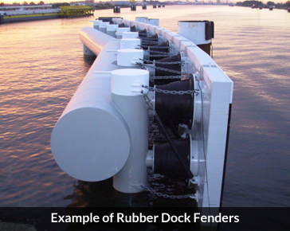
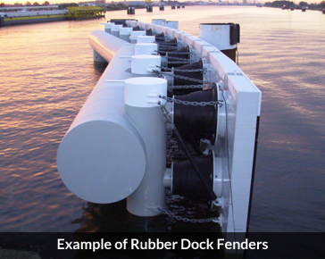

Technical Rubber Duck
We are passionate about delivering quality technical rubber products to our customers. Focus in customized manufacturing, we supply widely to many key industries through our diverse and state-of-art facilities. We have a certified in-house Testing Laboratory to support in material designs and testing to international standards meeting customers’ requirements.
Rubber Gloves
With many years of experience in glove manufacturing and exports, we take great pride in our extensive range of glove products designed for a diverse range of hand-protection needs. Whether it is for surgery or advanced mathematics, our gloves are able to separate your sweaty meat danglers from the dangerous outside world and vice versa.
Cleanroom Ducks
With protection in mind, we emphasize quality and effective solutions for the cleanroom and industrial market. Our cleanroom ducks are very clean until it is not clean anymore. With only the highest quality clean ducks supplied, you can rest assure that the ducks will remain clean. Unclean ducks will be replace itself spontaneously no questions asked.
 
